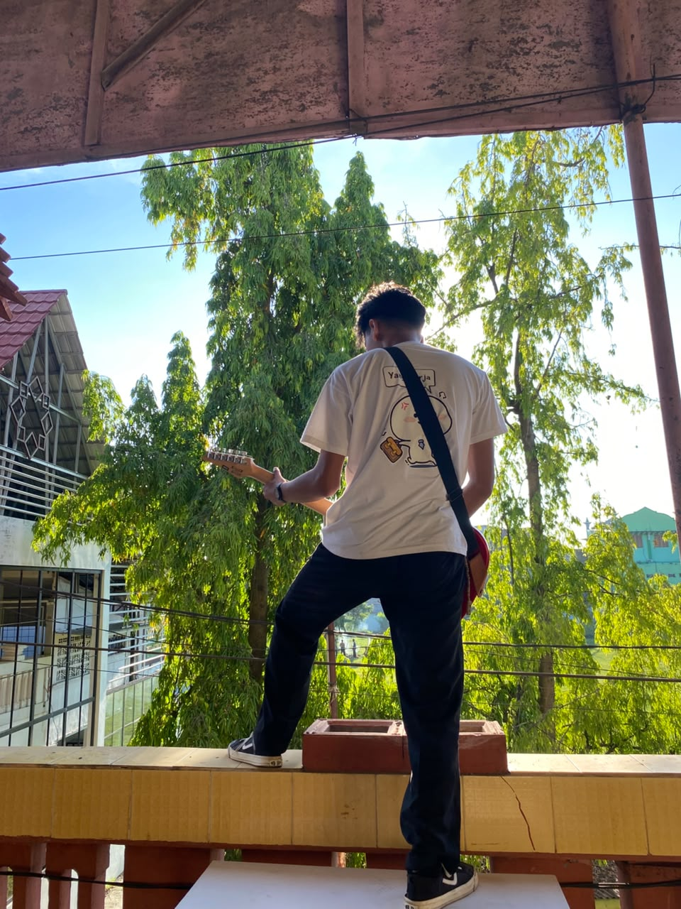

Tentang Saya

Halo! Saya adalah seorang mahasiswa Sistem Informasi yang sedang berfokus mempelajari pemrograman web dasar. Saya memiliki ketertarikan besar dalam membangun struktur halaman web yang rapih, mudah diakses, dan sesuai dengan standar HTML modern.
Saat ini, saya sedang aktif mengikuti perkuliahan *pemrograman web dasar* untuk mengasah kemampuan pemrograman saya. Di waktu luang, saya suka membaca artikel teknologi, memecahkan teka-teki logika, dan mengeksplorasi berbagai trend teknologi terbaru.
Keahlian
- HTML5 & Pemrograman Web Dasar
- Pemecahan Masalah (Problem Solving)
- Manajemen Waktu dan Kolaborasi Tim
- Bahasa Inggris Dasar
Riwayat Pendidikan
| Tingkat | Nama Institusi / Sekolah | Tahun |
|---|---|---|
| SMA / Sederajat | SMK Islam Krembung | 2022 - 2025 |
| Perguruan Tinggi | Universitas Pesantren Darul Ulum (Unipdu) Jombang | 2025 - Sekarang |